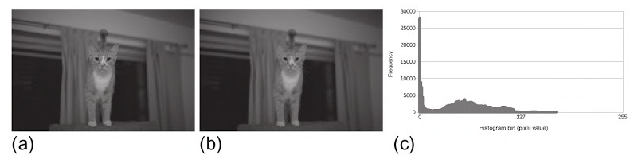

4.5 生产者-消费者
很多OpenCL应用中，前一个内核的输出可能就会作为下一个内核的输入。换句话说，第一个内核是生产者，第二个内核是消费者。很多应用中生产者和消费者是并发工作的，生产者只将产生的数据交给消费者。OpenCL 2.0中提供管道内存对象，用来帮助生产者-消费者这样的应用。管道所提供的潜在功能性帮助，无论生产者-消费者内核是串行执行或并发执行。
本节中，我们将使用管道创建一个生产者-消费者应用，其中生产者和消费者分别用内核构成，这两个内核使用的是本章前两个例子：卷积和直方图。卷积内核将会对图像进行处理，然后使用管道将输出图像传入直方图内核中(如图4.5所示)。为了描述额外的功能，展示管道如何使用处理单元提高应用效率。本节的例子我们将使用多设备完成。卷积内核将执行在GPU设备上，直方图内核将执行在CPU设备上。多个设备上执行内核可以保证两个内核能够并发执行，其中管道就用来传输生产者需要的数据(且为消费者需要的数据)。对于管道对象的详细描述将在第6章展开。那么现在，让我们来了解一下本节例子的一些基本需求。
管道内存中的数据(称为packets)组织为先入先出(FIFO)结构。管道对象的内存在全局内存上开辟，所以可以被多个内核同时访问。这里需要注意的是，管道上存储的数据，主机端无法访问。
内核中管道属性可能是只读(__read_only)或只写(__write_only)，不过不能是读写。如果管道对象没有指定是只读或只写，那么编译器将默认其为只读。管道在内核的参数列表中，通过使用关键字pipe进行声明，后跟数据访问类型，和数据包的数据类型。例如，pipe __read_only float *input将会创建一个只读管道，该管道中包含的数据为单精度浮点类型。

图4.5 生产者内核将滤波后生成的像素点，通过管道传递给消费者内核，让消费者内核产生直方图：(a)为原始图像;(b)为滤波后图像;(c)为生成的直方图。
为了访问管道，OpenCL C提供内置函数read_pipe()和write_pipe()：
int read_pipe(pipe gentype p, gentype *ptr);
int write_pipe(pipe gentype p, const gentype *ptr);
当一个工作项调用read_pipe()(程序清单4.10，第16行)，一个包将从管道p中读取到ptr中。如果包读取正常，该函数返回0；如果管道为空，则该函数返回一个负值。write_pipe()(程序清单4.9，第50行)与读取类似，会将ptr上的包写入到管道p中。如果包写入正常，该函数返回0；如果管道已满，则该函数返回一个负值
程序清单4.9和4.10展示了我们应用中内核的实现。当我们指定目标消费者内核运行在CPU时，那么只有一个工作项去创建直方图。同样，当我们显式的指定一个CPU，我们需要之间将直方图的结果存放在全局内存中(第8章将对这样的权衡做更细化的讨论)。
{%ace edit=false, lang='c_cpp'%} __constant sampler_t sampler = CLK_NORMALIZED_COORDS_FALSE | CLK_FILTER_NEAREST | CLK_ADDRESS_CLAMP_TO_EDGE;
__kernel void producerKernel( image2d_t __read_only inputImage, pipe __write_only float *outputPipe, __constant float filter, int filterWidth) { / Store each work-item's unique row and column */ int column = get_global_id(0); int row = get_global_id(1);
/* Half the width of the filter is needed for indexing
- memory later*/ int halfWidth = (int)(filterWidth / 2);
/* Used to hold the value of the output pixel */ float sum = 0.0f;
/* Iterator for the filter */ int filterIdx = 0;
/* Each work-item iterates around its local area on the basis of the
- size of the filter */ int2 coords; // Coordinates for accessing the image
/* Iterate the filter rows / for (int i = -halfWidth; i <= halfWidth; i++) { coords.y = row + i; / Iterate over the filter columns */ for (int j = -halfWidth; j <= halfWidth; j++) { coords.x = column + j;
/* Read a pixel from the image. A single channel image
* stores the pixel in the x coordinate of the returned
* vector. */
float4 pixel;
pixel = read_imagef(inputImage, sampler, coords);
sum += pixel.x * filter[filterIdx++];
}
}
/* Write the output pixel to the pipe */ write_pipe(outputPipe, &sum); } {%endace%}
程序清单4.9 卷积内核(生产者)
{%ace edit=false, lang='c_cpp'%} __kernel void consumerKernel( pipe __read_only float *inputPipe, int totalPixels, __global int *histogram) { int pixelCnt; float pixel;
/* Loop to process all pixels from the producer kernel / for (pixelCnt = 0; pixelCnt < totalPixels; pixelCnt++) { / Keep trying to read a pixel from the pipe * until one becomes available */ while(read_pipe(inputPipe, &pixel));
/* Add the pixel value to the histogram */
histogram[(int)pixel]++;
} } {%endace%}
程序清单4.10 卷积内核(消费者)
虽然，存储在管道中的数据不能被主机访问，不过在主机端还是需要使用对应的API创建对应的管道对象。其创建API如下所示：
cl_pipe clCreatePipe(
cl_context context,
cl_mem_flags flags,
cl_uint pipe_packet_size,
cl_uint pipe_max_packets,
const cl_pipe_properties *properties,
cl_int *errcode_ret)
我们需要考虑两个内核不是并发的情况；因此，我们就需要创建足够大的管道对象能存放下图像元素数量个包：
cl_mem pipe = clCreatepipe(context, 0, sizeof(float), imageRows * imageCols, NULL, &status);
利用多个设备的话，就需要在主机端多加几步。当创建上下文对象时，需要提供两个设备(一个CPU设备，一个GPU设备)，并且每个设备都需要有自己的命令队列。另外，程序对象需要产生两个内核。加载内核是，需要分别入队其各自的命令队列：生产者(卷积)内核需要入队GPU命令队列，消费者(直方图)内核需要入队CPU命令队列。完整的代码在程序清单4.11中。
{%ace edit=false, lang='c_cpp'%} /* System includes */ #include <stdio.h> #include <stdlib.h> #include <string.h>
/* OpenCL includes */ #include <CL/cl.h>
/* Utility functions */ #include "utils.h" #include "bmp-utils.h"
/* Filter for the convolution */ static float gaussianBlurFilter[25] = { 1.0f / 273.0f, 4.0f / 273.0f, 7.0f / 273.0f, 4.0f / 273.0f, 1.0f / 273.0f, 4.0f / 273.0f, 16.0f / 273.0f, 26.0f / 273.0f, 16.0f / 273.0f, 4.0f / 273.0f, 7.0f / 273.0f, 26.0f / 273.0f, 41.0f / 273.0f, 26.0f / 273.0f, 7.0f / 273.0f, 4.0f / 273.0f, 16.0f / 273.0f, 26.0f / 273.0f, 16.0f / 273.0f, 4.0f / 273.0f, 1.0f / 273.0f, 4.0f / 273.0f, 7.0f / 273.0f, 4.0f / 273.0f, 1.0f / 273.0f }; static const int filterWidth = 5; static const int filterSize = 25 * sizeof(float);
/* Number of histogram bins */ static const int HIST_BINS = 256;
int main(int argc, char argv[]) { / Host data */ float *hInputImage = NULL; int *hOutputHistogram = NULL;
/* Allocate space for the input image and read the
- data from dist */ int imageRows; int imageCols; hInputImage = readBmpFloat("../../Images/cat.bmp", &imageRows, &imageCols); const int imageElements = imageRows * imageCols; const size_t imageSize = imageElements * sizeof(float);
/* Allocate space for the histogram on the host */ const int histogramSize = HIST_BINS * sizeof(int); hOutputHistogram = (int *)malloc(histogramSize); if (!hOutputHistogram){ exit(-1); }
/* Use this to check the output of each API call */ cl_int status;
/* Get the first platform */ cl_platform_id platform; status = clGetPlatformIDs(1, &platform, NULL); check(status);
/* Get the devices */ cl_device_id devices[2]; cl_device_id gpuDevice; cl_device_id cpuDevice; status = clGetDeviceIDs(platform, CL_DEVICE_TYPE_CPU, 1, &gpuDevice, NULL); status = clGetDeviceIDs(platform, CL_DEVICE_TYPE_GPU, 1, &cpuDevice, NULL); check(status); devices[0] = gpuDevice; devices[1] = cpuDevice;
/* Create a context and associate it with the devices */ cl_context context; context = clCreateContext(NULL, 2, devices, NULL, NULL, &status); check(status);
/* Create the command-queues */ cl_command_queue gpuQueue; cl_command_queue cpuQueue; gpuQueue = clCreateCommandQueue(context, gpuDevice, 0, &status); check(status); cpuQueue = clCreateCommandQueue(context, cpuDevice, 0, &status); check(status);
/* The image desriptor describes how the data will be stored
- in memory. This descriptor initializes a 2D image with no pitch*/ cl_image_desc desc; desc.image_type = CL_MEM_OBJECT_IMAGE2D; desc.image_width = imageCols; desc.image_height = imageRows; desc.image_depth = 0; desc.image_array_size = 0; desc.image_row_pitch = 0; desc.image_slice_pitch = 0; desc.num_mip_levels = 0; desc.num_samples = 0; desc.buffer = NULL;
/* The image format descibes the properties of each pixel */ cl_image_format format; format.image_channel_order = CL_R; // single channel format.image_channel_data_type = CL_FLOAT;
/* Create the input image and initialize it using a
- pointer to the image data on the host. */ cl_mem inputImage; inputImage = clCreateImage(context, CL_MEM_READ_ONLY, &format, &desc, NULL, NULL);
/* Create a buffer object for the ouput histogram */ cl_mem ouputHistogram; outputHisrogram = clCreateBuffer(context, CL_MEM_WRITE_ONLY, &format, &desc, NULL, NULL);
/* Create a buffer for the filter */ cl_mem filter; filter = clCreateBuffer(context, cl_MEM_READ_ONLY, filterSize, NULL, &status); check(status);
cl_mem pipe; pipe = clCreatePipe(context, 0, sizeof(float), imageRows * imageCols, NULL, &status);
/* Copy the host image data to the GPU */ size_t origin[3] = {0,0,0}; // Offset within the image to copy from size_t region[3] = {imageCols, imageRows, 1}; // Elements to per dimension status = clEnqueueWriteImage(gpuQueue, inputImage, CL_TRUE, origin, region, 0, 0, hInputImage, 0, NULL, NULL); check(status);
/* Write the filter to the GPU */ status = clEnqueueWriteBuffer(gpuQueue, filter, CL_TRUE, 0, filterSize, gaussianBlurFilter, 0, NULL, NULL); check(status);
/* Initialize the output istogram with zeros */ int zero = 0; status = clEnqueueFillBuffer(cpuQueue, outputHistogram, &zero, sizeof(int), 0, histogramSize, 0, NULL, NULL); check(status);
/* Create a program with source code / char programSource = readFile("producer-consumer.cl"); size_t programSourceSize = strlen(programSource); cl_program program = clCreateProgramWithSource(context, 1, (const char)&programSource, &programSourceLen, &status); check(status);
/* Build (compile) the program for the devices */ status = clBuildProgram(program, 2, devices, NULL, NULL, NULL); if (status != CL_SUCCESS) { printCompilerError(program, gpuDevice); exit(-1); }
/* Create the kernel */ cl_kernel producerKernel; cl_kernel consumerKernel; producerKernel = clCreateKernel(program, "producerKernel", &status); check(status); consumerKernel = clCreateKernel(program, "consumerKernel", &status); check(status);
/* Set the kernel arguments */ status = clSetKernelArg(producerKernel, 0, sizeof(cl_mem), &inputImage); status |= clSetKernelArg(producerKernel, 1, sizeof(cl_mem), &pipe); status |= clSetKernelArg(producerKernel, 2, sizeof(int), &filterWidth); check(status);
status |= clSetKernelArg(consumerKernel, 0, sizeof(cl_mem), &pipe); status |= clSetKernelArg(consumerKernel, 1, sizeof(int), &imageElements); status |= clSetKernelArg(consumerKernel, 2, sizeof(cl_mem), &outputHistogram); check(status);
/* Define the index space and work-group size */ size_t producerGlobalSize[2]; producerGlobalSize[0] = imageCols; producerGlobalSize[1] = imageRows;
size_t producerLocalSize[2]; producerLocalSize[0] = 8; producerLocalSize[1] = 8;
size_t consumerGlobalSize[1]; consumerGlobalSize[0] = 1;
size_t consumerLocalSize[1]; consumerLocalSize[0] = 1;
/* Enqueue the kernels for execution */ status = clEnqueueNDRangeKernel(gpuQueue, producerKernel, 2, NULL, producerGlobalSize, producerLocalSize, 0, NULL, NULL);
status = clEnqueueNDRangeKernel(cpuQueue, consumerKernel, 2, NULL, consumerGlobalSize, consumerLocalSize, 0, NULL, NULL);
/* Read the output histogram buffer to the host */ status = clEnqueueReadBuffer(cpuQueue, outputHistogram, CL_TRUE, 0, histogramSize, hOutputHistogram, 0, NULL, NULL); check(status);
/* Free OpenCL resources */ clReleaseKernel(producerKernel); clReleaseKernel(consumerKernel); clReleaseProgram(program); clReleaseCommandQueue(gpuQueue); clReleaseCommandQueue(cpuQueue); clReleaseMemObject(inputImage); clReleaseMemObject(outputHistogram); clReleaseMemObject(filter); clReleaseMemObject(pipe); clReleaseContext(context);
/* Free host resources */ free(hInputImage); free(hOutputHistogram); free(programSource);
return 0; } {%endace%}
程序清单4.11 生产者-消费者主机端完整代码